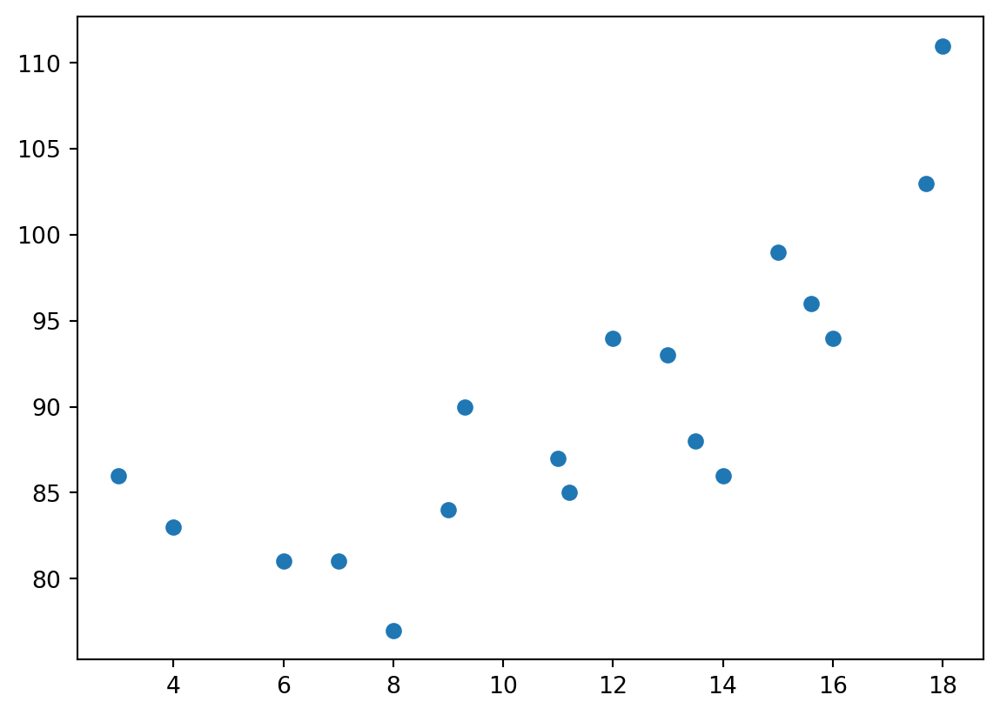
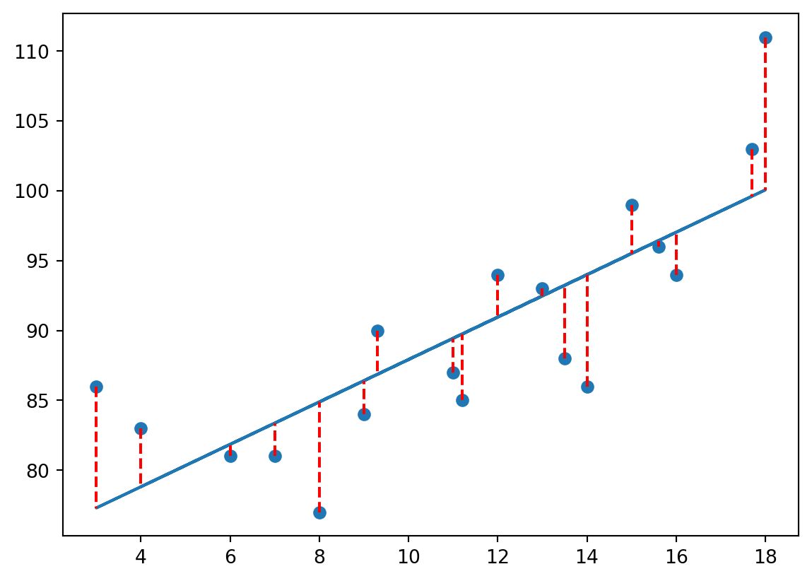

import numpy as np
import sympy
import time7 Arrays, matrizes e álgebra linear
7.1 Introdução
Até aqui, utilizamos Python principalmente como linguagem de programação geral: armazenando valores, criando listas, utilizando loops e escrevendo funções. Entretanto, em Economia e ciência de dados, frequentemente trabalhamos com vetores de observações, matrizes de dados, sistemas de equações e operações matemáticas repetidas milhares de vezes. Embora listas permitam armazenar coleções de valores, elas não foram projetadas para computação numérica eficiente e em larga escala. O NumPy resolve esse problema ao introduzir os arrays, estruturas otimizadas para operações matemáticas e manipulação de grandes volumes de dados, tanto em termos de velocidade quanto de uso de memória.
Nesta aula veremos como arrays funcionam, por que eles são mais eficientes que listas e como esses conceitos aparecem em aplicações quantitativas reais. Ao final deste capítulo, o aluno deverá ser capaz de (i) compreender a diferença entre arrays e listas, (ii) realizar operações matemática vetorizadas, como solução de sistemas de equação e regressão linear e (iii) compreender a importância dessas estruturas e ferramentas dentro do ambiente de problemas aplicados em Economia.

7.1.1 Pré-requisitos
O foco deste capítulo será o pacote NumPy, que, apesar de já vir instalado com o Anaconda, não é nativo do Python e, portanto, é preciso carregá-lo. Além disso, em alguma aplicações utilizaremos o pacote time para contagem de tempo de máquina e o pacote SymPy para solução analítica de problemas.
numpytimesympy
7.2 O que é o NumPy?
NumPy (Numerical Python) é o pacote fundamental para computação científica em Python. Essa biblioteca é peça fundamental em outras bibliotecas igualmente importantes, como o Pandas e o Matplotlib. É uma biblioteca Python que tem como principal objeto o ndarray, um array multidimensional que guarda bastante semelhança com a ideia de vetores e matrizes, embora seja um objeto específico dentro da linguagem, com suas características e métodos próprios. O pacote contém também uma variedade de rotinas para operações rápidas em arrays, incluindo matemática, lógica, álgebra linear básica, operações estatísticas básicas e muito mais.
Mas o que é de fato um ndarray? É um objeto multidimensional que nos permite armazenar dados de forma sequencial e que podem ser acessados via indexação. Ué, mas isso é muito parecido com uma lista (ou um conjunto de listas). Qual a diferença então?
NumPy arrays têm um tamanho fixo na criação, ao contrário das listas, que podem crescer. Alterar o tamanho de um ndarray criará um novo array e excluirá o original.
Todos os elementos em um array devem ser do mesmo tipo de dados, diferentemente de listas, que são objetos mais genéricos. Isso facilita a gestão de memória e torna operações com esse tipo de objeto ordens de magnitude mais rápidas do que se utilizássemos listas.
A maior velocidade e eficiência de armazenamento fazem do NumPy uma das bibliotecas mais utilizadas em aplicações matemáticas e científicas. Saber apenas as ferramentas nativas do Python, como listas, hoje já não é mais suficiente.
São muitas as qualidades do NumPy que fazem dele a melhor escolha quanto o assunto é lidar com objetos sequenciais, multidimensionais, e com os quais queremos operar tal qual vetores e matrizes. Mas chega de lenga lenga, vamos ao trabalho!
7.3 Elementos básicos do NumPy
7.3.1 Arrays unidimensionais
Comecemos criando um numpy.ndarray do zero, contendo os números 1, 2 e 3. Podemos fazê-lo da seguinte forma:
a = np.array([1, 2, 3])
print(a)
print(type(a))[1 2 3]
<class 'numpy.ndarray'>A sintaxe é essa mesma: um par de colchetes dentro dos parênteses. Se tentarmos passar sem os colchetes, o Python retornará um erro.
a = np.array(1, 2, 3)--------------------------------------------------------------------------- TypeError Traceback (most recent call last) Cell In[3], line 1 ----> 1 a = np.array(1, 2, 3) TypeError: array() takes from 1 to 2 positional arguments but 3 were given
Da mesma forma que uma sequência de 3 números inteiros, podemos criar um numpy.ndarray que repete 3 vezes o número 0 ou 3 vezes o número 1.
a = np.zeros(3)
b = np.ones(3)
print(a)
print(b)[0. 0. 0.]
[1. 1. 1.]Note que em ambos os casos os números aparecem com o ponto da casa decimal, o que é um indicativo de que estão armazenados como valores do tipo float. E se quiséssemos criar esses mesmos arrays, mas especificando que os números são inteiros, i.e., do tipo int?
a = np.zeros(3, dtype=int)
b = np.ones(3, dtype=int)
print(a)
print(b)[0 0 0]
[1 1 1]A função numpy.linspace(x,y,z) nos permite criar um array que vai de x até y, com z elementos igualmente espaçados.
a = np.linspace(0,8,5, dtype=int)
print(a)[0 2 4 6 8]Podemos acessar os elementos de um array qualquer utilizando a mesma ideia de indexação de listas:
print('Array a =',a)
print('\nPrimeiro elemento de a = ',a[0])
print('Segundo elemento de a = ',a[1])
print('Último elemento de a = ',a[-1])
print('Dois primeiros elementos de a = ',a[0:2])Array a = [0 2 4 6 8]
Primeiro elemento de a = 0
Segundo elemento de a = 2
Último elemento de a = 8
Dois primeiros elementos de a = [0 2]7.3.2 Arrays multidimensionais
Como falamos anteriormente, um objeto do tipo numpy.ndarray é um array n-dimensional (por isso o nd em ndarray). Até agora trabalhamos apenas com uma dimensão, mas para as nossas aplicações é particularmente interessante o caso em que o número de dimensões é igual a 2, i.e., para o caso em que o array assume a forma de uma matriz.
Podemos criar esse tipo de array usando a mesma lógica de antes, com pequenas alterações na sintaxe:
A_22 = np.array([[1, 2], [3, 4]], dtype=int)
print('Matriz A =\n',A_22)Matriz A =
[[1 2]
[3 4]]O NumPy nos oferece algumas funções interessantes para criarmos matrizes específicas:
print('Matriz identidade 2x2 =\n',np.eye(2,dtype=int))
print('\nMatriz diagonal 3x3 =\n',np.diag([1,2,3]))Matriz identidade 2x2 =
[[1 0]
[0 1]]
Matriz diagonal 3x3 =
[[1 0 0]
[0 2 0]
[0 0 3]]Podemos criar a matriz transposta de uma dada matriz utilizando a função np.transpose() (ou apenas o método .T):
print('Matriz A =\n',A_22)
print('\nTransposta da matriz A =\n',np.transpose(A_22))
print('\nTransposta da matriz A =\n',A_22.T)Matriz A =
[[1 2]
[3 4]]
Transposta da matriz A =
[[1 3]
[2 4]]
Transposta da matriz A =
[[1 3]
[2 4]]Assim como em arrays unidimensionais, podemos acessar os elementos de uma matriz utilizando indexação, mas agora em 2 dimensões:
A = np.array([[1,2,3], [4,5,6], [7,8,9]])
print('Matriz A =\n',A)
print('\nElemento 11 de A = ',A[0,0])
print('Elemento 23 de A = ',A[1,2])
print('Primeira linha de A = ',A[0,:])
print('Segunda coluna de A = ',A[:,1])
print('\nSubmatriz de A delimitada pelos elementos 22 e 33 =\n',A[1:,1:])Matriz A =
[[1 2 3]
[4 5 6]
[7 8 9]]
Elemento 11 de A = 1
Elemento 23 de A = 6
Primeira linha de A = [1 2 3]
Segunda coluna de A = [2 5 8]
Submatriz de A delimitada pelos elementos 22 e 33 =
[[5 6]
[8 9]]7.3.3 Propriedades de arrays
O NumPy fornece alguns métodos úteis que, apesar de não receberem nenhum argumento, nos permitem acessar algumas das características dos arrays que criamos.
ndimretorna o número de dimensões do array;shaperetorna o tamanho do array em cada uma de suas dimensões;dtyperetorna o tipo de dado contido no array;sizeretorna o número total de elementos contidos no array.
X1 = np.array([[1,2,3], [4,5,6], [7,8,9]])
X2 = X1.flatten() # O método flatten reduz um array de n-dimensões em um array de uma única dimensão
print('Array X1 =\n',X1)
print('\nDimensões de X1 = ', X1.ndim)
print('Shape de X1 = ', X1.shape)
print('Tipo de dado em X1 = ', X1.dtype)
print('Número de elementos em X1 = ', X1.size)
print('\n\nArray X2 =\n',X2)
print('\nDimensões de X2 = ', X2.ndim)
print('Shape de X2 = ', X2.shape)
print('Tipo de dado em X2 = ', X2.dtype)
print('Número de elementos em X2 = ', X2.size)Array X1 =
[[1 2 3]
[4 5 6]
[7 8 9]]
Dimensões de X1 = 2
Shape de X1 = (3, 3)
Tipo de dado em X1 = int64
Número de elementos em X1 = 9
Array X2 =
[1 2 3 4 5 6 7 8 9]
Dimensões de X2 = 1
Shape de X2 = (9,)
Tipo de dado em X2 = int64
Número de elementos em X2 = 9Um método interessante de arrays é o reshape(x,y) que reorganiza um array existente de acordo com os argumentos x e y:
X = np.array([[1,2,3,4], [5,6,7,8], [9,10,11,12], [13,14,15,16]])
print('Array X1 4x4 =\n',X)
print('\n X1 reorganizado em 2x8 =\n',X.reshape(2,8))
print('\n X1 reorganizado em 8x2 =\n',X.reshape(8,2))Array X1 4x4 =
[[ 1 2 3 4]
[ 5 6 7 8]
[ 9 10 11 12]
[13 14 15 16]]
X1 reorganizado em 2x8 =
[[ 1 2 3 4 5 6 7 8]
[ 9 10 11 12 13 14 15 16]]
X1 reorganizado em 8x2 =
[[ 1 2]
[ 3 4]
[ 5 6]
[ 7 8]
[ 9 10]
[11 12]
[13 14]
[15 16]]7.4 Operações básicas com arrays
Até agora, utilizamos listas para armazenar e operar com coleções de valores. No entanto, listas não foram projetadas para cálculos numéricos. Por exemplo, operações como soma elemento a elemento ou multiplicação por escalar exigem loops explícitos. Arrays resolvem esse problema permitindo operações diretas sobre todos os elementos, sem a necessidade de recorrer à iteração.
7.4.1 Operações aritméticas simples
Dois tipos de operações que serão úteis para arrays de qualquer dimensão são:
- Operações entre um array e um único número.
- Operações entre dois arrays da mesma forma.
Quando realizamos operações em um array usando um único número, simplesmente aplicamos essa operação a cada elemento do array. Isso vale tanto para arrays unidimensionais (vetores) quanto multidimensionais (por ex., matrizes).
x = np.array([1,2,3], dtype=int)
print("x =\n", x)
print("\n2 + x =\n", 2 + x)
print("\n2 - x =\n", 2 - x)
print("\n2 * x =\n", 2 * x)
print("\nx / 2 =\n", x / 2)x =
[1 2 3]
2 + x =
[3 4 5]
2 - x =
[ 1 0 -1]
2 * x =
[2 4 6]
x / 2 =
[0.5 1. 1.5]X = np.ones((2, 2), dtype=int)
print("X =\n", X)
print("\n2 + X =\n", 2 + X)
print("\n2 - X =\n", 2 - X)
print("\n2 * X =\n", 2 * X)
print("\nX / 2 =\n", X / 2)X =
[[1 1]
[1 1]]
2 + X =
[[3 3]
[3 3]]
2 - X =
[[1 1]
[1 1]]
2 * X =
[[2 2]
[2 2]]
X / 2 =
[[0.5 0.5]
[0.5 0.5]]Para operações entre dois arrays de mesmo tamanho, basta aplicar a operação elemento a elemento (elementwise, em inglês) entre os arrays.
x = np.array([2, 4, 6], dtype=int)
y = np.array([2, 2, 1], dtype=int)
print("x =\n", x)
print("\ny =\n", y)
print("\nx + y =\n", x + y)
print("\nx - y =\n", x - y)x =
[2 4 6]
y =
[2 2 1]
x + y =
[4 6 7]
x - y =
[0 2 5]X = np.array([[2, 4], [6, 8]], dtype=int)
Y = np.array([[2, 2], [2, 2]], dtype=int)
print("X =\n", X)
print("\nY =\n", Y)
print("\nX + Y =\n", X + Y)
print("\nX - Y =\n", X - Y)X =
[[2 4]
[6 8]]
Y =
[[2 2]
[2 2]]
X + Y =
[[ 4 6]
[ 8 10]]
X - Y =
[[0 2]
[4 6]]As operações de multiplicação e divisão entre arrays são um pouco diferentes. São duas as possibilidades:
- Multiplicação e divisão elemento a elemento.
- Multiplicação entre arrays usando a lógica de matriz e “divisão” usando a lógica de matriz inversa.
Para realizar as operações elementwise basta utilizar os sinais usuais de * e /, independentemente do número de dimesões do array.
print('Vetores x e y:')
print('x =',x)
print('y =',y)
print("\n x * y =\n", x * y)
print("\n x / y =\n", x / y)
print('\nMatrizes X e Y:')
print('X =\n',X)
print('Y =\n',Y)
print("\n X * Y =\n", X * Y)
print("\n X / Y =\n", X / Y)Vetores x e y:
x = [2 4 6]
y = [2 2 1]
x * y =
[4 8 6]
x / y =
[1. 2. 6.]
Matrizes X e Y:
X =
[[2 4]
[6 8]]
Y =
[[2 2]
[2 2]]
X * Y =
[[ 4 8]
[12 16]]
X / Y =
[[1. 2.]
[3. 4.]]A multiplicação de matriz com matriz, do jeito que a gente conhece do Ensino Médio é feita usando o símbolo @ (ou através da função np.dot()):
X= np.array([[1, 2], [3, 4]], dtype=int)
Y= np.array([[10, 20], [30, 40]], dtype=int)
print('X =\n',X)
print('Y =\n',Y)
print('\nX * Y =\n', X @ Y)
print('\nX * Y =\n', np.dot(X,Y))X =
[[1 2]
[3 4]]
Y =
[[10 20]
[30 40]]
X * Y =
[[ 70 100]
[150 220]]
X * Y =
[[ 70 100]
[150 220]]Para calcular a inversa de uma matriz utilizando o NumPy é preciso um pouco mais de estrutura e de conhecimento acerca do subpacote linalg que nos traz funções para realizar operações de álgebra linear. Falaremos disso já já!
7.4.2 Funções universais
As funções universais no Numpy são funções matemáticas simples. É apenas um termo que demos às funções matemáticas na biblioteca Numpy, que cobrem uma ampla variedade de operações. Essas funções incluem funções trigonométricas padrão, funções para operações aritméticas, manipulação de números complexos, funções estatísticas, etc. Essas funções possuem como características principais:
- Elas executam operações de array elemento por elemento.
- Elas suportam vários recursos, como conversão de tipos.
- As funções universais são objetos que pertencem à classe
numpy.ufunc. - As funções do Python também podem ser criadas como uma função universal usando a função da biblioteca
frompyfunc. - Algumas funções universais são chamadas automaticamente quando o operador aritmético correspondente é usado em arrays. Por exemplo, quando a adição de dois arrays é executada em elementos usando o operador ‘+’, então
np.add()é chamado internamente.
Existem diversas funções universais matemáticas, como aquelas utilizadas para o cálculo do seno, cosseno e tangente de ângulos (sin, cos e tan). No entanto, para aqueles que trabalham com análise e ciência de dados, as funções estatísticas são mais utilizadas. Dentre as principais funções universais estatísticas estão:
amin,amax: retorna o mínimo ou máximo de um array ou ao longo de um eixo.ptp: retorna o intervalo de valores (máximo-mínimo) de um array ou ao longo de um eixo.sum: retorna a soma de valores de um array ao longo de um eixo.percentile(a, p, eixo): calcular o p-ésimo percentil da matriz ou ao longo do eixo especificado.median: calcular a mediana dos dados ao longo do eixo especificado.mean: calcular a média dos dados ao longo do eixo especificado.var: calcular a variância de dados ao longo do eixo especificado.log: calcular o log dos dados ao longo do eixo especificado.
x = np.array([1,2,3,4,5])
print('Array x = ',x)
print('\nMínimo de x = ',np.amin(x))
print('Máximo de x = ',np.amax(x))
print('Intervalo de x = ',np.ptp(x))
print('Soma de x = ',np.sum(x))
print('Média de x = ',np.mean(x))
print('Log de x = ',[np.round(elem,2) for elem in np.log(x)])Array x = [1 2 3 4 5]
Mínimo de x = 1
Máximo de x = 5
Intervalo de x = 4
Soma de x = 15
Média de x = 3.0
Log de x = [np.float64(0.0), np.float64(0.69), np.float64(1.1), np.float64(1.39), np.float64(1.61)]7.4.3 Arrays e listas
Agora que já vimos um pouco de operações básicas, podemos entender um pouco melhor a diferença de desempenho entre arrays e listas. Em listas, operações matemáticas precisam normalmente ser implementadas manualmente utilizando loops. Arrays permitem aplicar operações diretamente sobre todos os elementos de uma só vez. Isso torna o processo muito mais eficiente em termos computacionais.
Para ver isso na prática, considere um array de dez milhões de números inteiros e uma lista equivalente:
my_array = np.arange(10000000)
my_list = list(range(10000000))Agora vamos multiplicar, elemento a elemento, todos os números por 2 e salvar o resultado correspondente. Utilizaremos a função time do pacote timepara fazer a medição do tempo utilizado pelos dois métodos.
# arrays
start_array = time.time()
my_array2 = my_array * 2
end_array = time.time()
# listas
start_lista = time.time()
my_list2 = [x * 2 for x in my_list]
end_lista = time.time()
ratio = (end_lista - start_lista) / (end_array - start_array)Qual abordagem será que levou menos tempo?
print('Tempo necessário para a realização dos cálculos utilizando arrays: {:.4f} segundos'.format(end_array - start_array))
print('Tempo necessário para a realização dos cálculos utilizando listas: {:.4f} segundos'.format(end_lista - start_lista))
print('\nA abordagem de listas demorou {:.0f}x mais tempo! Esqueça listas e use arrays ;)'.format(ratio - 1))Tempo necessário para a realização dos cálculos utilizando arrays: 0.0125 segundos
Tempo necessário para a realização dos cálculos utilizando listas: 0.2769 segundos
A abordagem de listas demorou 21x mais tempo! Esqueça listas e use arrays ;)7.5 Aplicação: solução de sistema de equações lineares
Chega de exemplos vazios, vamos usar o NumPy para resolver um problema concreto e que nos é muito familiar: a solução de sistemas de equações lineares. Considere o sistema linear de equações dado por
\[ A\cdot \vec{x} = \vec{b} \]
tal que \(A\) é a matriz de coeficientes, \(\vec{x}\) é o vetor de incógnitas e \(\vec{b}\) o vetor de constantes.
DicaAlgoritmo de eliminação de Gauss-Jordan
Segundo Hubbard e Hubbard (2015), uma matriz de coeficientes \(A\) é representada em sua forma escalonada reduzida por linhas (reduced row echelon form, em inglês) se
- Em toda e qualquer linha, a primeira entrada diferente de zero é igual a 1 (1 pivotal).
- O 1 pivotal de uma linha mais abaixo está sempre à direita de um outro 1 pivotal de alguma linha acima.
- Em toda e qualquer coluna que contém um 1 pivotal, todas as outras entradas são iguais a zero.
- Toda linha contendo apenas zeros está no fim da matriz.
À partir dessa definição, é possível mostrar que para qualquer matriz \(A\), existe uma matriz \(\tilde{A}\) na forma escalonada reduzida por linhas que pode ser obtida à partir de operações elementares nas linhas de A. Além disso, é possível mostrar também que \(\tilde{A}\) é única. Ao algoritmo utilizado para encontrar \(\tilde{A}\) é dado o nome de Algoritmo de Eliminação de Gauss-Jordan.
Para levar uma matriz \(A\) a sua forma escalonada reduzida por linhas \(\tilde{A}\) devemos seguir os seguintes passos:
Encontre a primeira coluna que não é composta apenas de zeros, chame isso de primeira coluna pivotal e chame sua primeira entrada diferente de zero de pivô. Se o pivô não for na primeira linha, mova a linha que a contém para o topo da matriz.
Divida a primeira linha inteira pelo pivô, de modo que a primeira entrada da primeira coluna pivotal seja igual a 1.
Adicione múltiplos apropriados da primeira linha às outras linhas para garantir que todas as outras entradas da primeira coluna pivotal sejam iguais a 0. O 1 na primeira coluna é agora um pivô 1.
Escolha a próxima coluna que contém pelo menos uma entrada diferente de zero abaixo da primeira linha e coloque a linha que contém o novo pivô na posição da segunda linha. Faça do pivô um pivô 1: divida a linha inteira pelo pivô e adicione múltiplos apropriados desta linha às outras linhas abaixo, para tornar todas as outras entradas desta coluna iguais a 0.
Repita o processo até que a matriz esteja em sua forma escalonada reduzida por linhas.
Assuma o caso em que a matriz de coeficiente \(A\) e o vetor de constantes \(b\) são tais que a matriz ampliada é dada por:
\[\left[\begin{array}{ccc|c} 2 & 2 & 1 & 1 \\ 1 & 3 & 1 & 2 \\ 1 & 2 & 2 & -1 \end{array}\right] \]
- Passo 1: Defina a matriz M
M = np.array([(2, 2, 1, 1),
(1, 3, 1, 2),
(1, 2, 2, -1)],dtype=float)
print('Matriz ampliada =\n',M)Matriz ampliada =
[[ 2. 2. 1. 1.]
[ 1. 3. 1. 2.]
[ 1. 2. 2. -1.]]- Passo 2: Divida a linha 1 pelo primeiro elemento da primeira linha
M[0,:] = M[0,:] / M[0,0]
print(M)[[ 1. 1. 0.5 0.5]
[ 1. 3. 1. 2. ]
[ 1. 2. 2. -1. ]]- Passo 3: Subtraia a linha 1 da linha 2 e da linha 3
M[1,:] = M[1,:] - M[0,:]
M[2,:] = M[2,:] - M[0,:]
print(M)[[ 1. 1. 0.5 0.5]
[ 0. 2. 0.5 1.5]
[ 0. 1. 1.5 -1.5]]- Passo 4: Divida a linha 2 pelo segundo elemento da segunda linha
M[1,:] = M[1,:] / M[1,1]
print(M)[[ 1. 1. 0.5 0.5 ]
[ 0. 1. 0.25 0.75]
[ 0. 1. 1.5 -1.5 ]]- Passo 5: Subtraia a linha 2 da linha 3
M[2,:] = M[2,:] - M[1,:]
print(M)[[ 1. 1. 0.5 0.5 ]
[ 0. 1. 0.25 0.75]
[ 0. 0. 1.25 -2.25]]- Passo 6: Divida a linha 3 pelo terceiro elemento da terceira linha
M[2,:] = M[2,:] / M[2,2]
print(M)[[ 1. 1. 0.5 0.5 ]
[ 0. 1. 0.25 0.75]
[ 0. 0. 1. -1.8 ]]- Passo 7: Multiplique a linha 3 pelo terceiro elemento da segunda linha e subtraia da linha 2
M[1,:] = M[1,:] - M[1,2] * M[2,:]
print(M)[[ 1. 1. 0.5 0.5]
[ 0. 1. 0. 1.2]
[ 0. 0. 1. -1.8]]- Passo 8: Multiplique a linha 3 pelo terceiro elemento da primeira linha e subtraia da linha 1
M[0,:] = M[0,:] - M[0,2] * M[2,:]
print(M)[[ 1. 1. 0. 1.4]
[ 0. 1. 0. 1.2]
[ 0. 0. 1. -1.8]]- Passo 9: Subtraia a linha 2 da linha 1
M[0,:] = M[0,:] - M[1,:]
print(M)[[ 1. 0. 0. 0.2]
[ 0. 1. 0. 1.2]
[ 0. 0. 1. -1.8]]Temos a nossa matriz em sua forma escalonada reduzida por linhas! A solução do sistema é tal que:
print('A solução de x1 é: {:.2f}'.format(M[0,3]))
print('A solução de x2 é: {:.2f}'.format(M[1,3]))
print('A solução de x3 é: {:.2f}'.format(M[2,3]))A solução de x1 é: 0.20
A solução de x2 é: 1.20
A solução de x3 é: -1.80Uma forma mais simples de chegar na forma escalonada reduzida por linhas é através do pacote SymPy e das funções Matrix e rref:
M_sympy = sympy.Matrix([(2, 2, 1, 1),
(1, 3, 1, 2),
(1, 2, 2, -1)])
M_sympy.rref()[0]\(\displaystyle \left[\begin{matrix}1 & 0 & 0 & \frac{1}{5}\\0 & 1 & 0 & \frac{6}{5}\\0 & 0 & 1 & - \frac{9}{5}\end{matrix}\right]\)
7.5.1 Solução de sistemas exatamente identificados
Uma outra forma de resolver sistemas de equações exatamente identificados, quando o número de incógnitas é igual ao número de equações (i.e., matriz \(A\) é quadrada) é através da matriz inversa de \(A\). Para o caso em que \(A^{-1}\) existe, o sistema é tal que
\[ \vec{x} = A^{-1} \cdot \vec{b} \]
Para que seja possível fazer dessa forma, \(A\) deve ser uma matriz quadrada e seu determinante ser diferente de \(0\). Mais uma vez assuma o caso em que \(A\) e \(\vec{b}\) são dados por:
\[A = \begin{bmatrix} 2 & 2 & 1 \\ 1 & 3 & 1 \\ 1 & 2 & 2 \end{bmatrix} \quad \quad \vec{b} = \begin{bmatrix} 1 \\ 2 \\ -1 \end{bmatrix} \]
O primeiro passo é conferir se a matrix \(A\) é quadrada. Podemos fazer isso usando a função numpy.shape()
b = np.array([1, 2, -1])
A = np.array([(2, 2, 1), (1, 3, 1), (1, 2, 2)])
np.shape(A)[0] == np.shape(A)[1]TrueO próximo passo é ver se o determinante da matriz é igual a 0 e para isso usamos um função do subpacote de álgebra linera do numpy, numpy.linalg.det():
print('A =')
print(A)
print('\nDeterminante = ',np.round(np.linalg.det(A)))A =
[[2 2 1]
[1 3 1]
[1 2 2]]
Determinante = 5.0Como ambas as condições são satisfeitas, por fim basta calcular a inversa da matriz \(A\) com numpy.linalg.inv() e multiplicar por \(\vec{b}\) para chegar nos valores de x, y e z que solucionam o sistema de equações.
print('A =')
print(A)
print("\nInversa de A = ")
print(np.linalg.inv(A))A =
[[2 2 1]
[1 3 1]
[1 2 2]]
Inversa de A =
[[ 0.8 -0.4 -0.2]
[-0.2 0.6 -0.2]
[-0.2 -0.4 0.8]]solution = np.linalg.inv(A) @ b
solutionarray([ 0.2, 1.2, -1.8])print('A solução de x1 é: {:.2f}'.format(solution[0]))
print('A solução de x2 é: {:.2f}'.format(solution[1]))
print('A solução de x3 é: {:.2f}'.format(solution[2]))A solução de x1 é: 0.20
A solução de x2 é: 1.20
A solução de x3 é: -1.80Uma última alternativa para resolver o sistema \(A\cdot \vec{x} = \vec{b}\), é utilizar a função solve do subpacote de álgebra linear do NumPy. Essa função faz o processo de resolução do sistema de forma direta e nos cospe o vetor de resultado.
np.linalg.solve(A,b)array([ 0.2, 1.2, -1.8])7.6 Aplicação: regressão linear simples
7.6.1 Intuição e enunciado do problema
Uma das aplicações mais importantes de álgebra linear em Economia e ciência de dados é a regressão linear. O termo regressão remete a ideia de estabelecer uma relação entre variáveis a partir de uma sequência de pares ordenados. Já o termo linear remete à forma como se pretende estabelecer essa relação: uma linha. No caso mais simples, o método tem por objetivo descobrir a linha melhor aproxima a relação entre duas variáveis a partir de uma nuvem de pontos no plano cartesiano.
Considere um caso simples, em que se pretende descobrir como a experiência de um indivíduo no emprego se relaciona com o salário que ele recebe no fim do mês. Suponha que nesse caso o pesquisador tenha acesso a uma base de dados que armazena, para diferentes indivíduos, o valor tanto da experiência quanto do salário. Assim, o que o pesquisador observa é uma sequência de pares ordenados (experiência, salário). Em uma amostra hipotética, essas informações são armazenadas em duas listas:
exp = [15,13,12,13.5,18,3,17.7,11,16,9.3,8,11.2,14,6,4,7,9,15.6]
sal = [99,93,94,88,111,86,103,87,94,90,77,85,86,81,83,81,84,96]
print('O 3º indivíduo possui experiência de {} anos e um salário igual a R${}/hora.'.format(exp[2],sal[2]))O 3º indivíduo possui experiência de 12 anos e um salário igual a R$94/hora.Colocando todos os pares ordenados em um gráfico, com o eixo x representando experiência adquirida e o eixo y representando o salário por hora do indivíduo, temos:

A ideia da regressão linear simples é, a partir dessa nuvem de pontos, encontrar a reta que melhor representa esses dados. Mas “melhor” é, por definição, um conceito relativo, que depende da avaliação de determinada opção frente às alternativas. É preciso então definir algo a ser otimizado, um objetivo a ser atingido. No caso da regressão linear simples, o objetivo é minimizar a soma ao quadrado das distâncias dos pares ordenados até essa reta. No gráfico abaixo, essas distâncias são dadas pelas retas tracejadas vermelhas.

Formalmente, podemos escrever a equação que representa a relação linear entre essas duas variáveis para um determinado indivíduo \(i\) como:
\[ y_i = \beta_0 + \beta_1 x_i + \epsilon_i \]
em que, \(y_i\) representa o salário e \(x_i\) o nível de experiência. \(\beta_0\) representa a constante da equação da reta e \(\beta_1\) o coeficiente de inclinação. Como essa reta nunca será uma representação perfeita da nuvem de pontos–existem outros fatores que influenciam o salário que não o nível de exeperiência–, \(\epsilon_i\) representa o erro dessa aproximação (a barrinha vermelha individual). Assim, estimar a reta que melhor se aproxima da nuvem de pontos de \(n\) indivíduos é o mesmo que resolver o problema de otimização abaixo escolhendo os coeficientes \(\beta_0\) e \(\beta_1\).
\[ \min_{\beta_0,\beta_1} \sum_{i=1}^n (y_i - \beta_0 - \beta_1 x_i)^2 \]
Os coeficientes que resolvem esse problema são também conhecidos como estimadores de Mínimos Quadrados Ordinários (em inglês, Ordinary Least Squares ou OLS).
7.6.2 Representação matricial e implementação
Uma forma equivalente de representar esse problema é através da notação matricial. E ela que vamos utilizar agora. Note que as \(n\) equações representando a relação dos dados dos \(n\) indivíduos podem ser representadas como:
\[ \begin{aligned} y_1 = \beta_0 + \beta_1 x_1 + \epsilon_1 \\ y_2 = \beta_0 + \beta_1 x_2 + \epsilon_2 \\ \vdots \\ y_{n-1} = \beta_0 + \beta_1 x_{n-1} + \epsilon_{n-1} \\ y_{n} = \beta_0 + \beta_1 x_{n} + \epsilon_{n} \end{aligned} \]
Esse sistema de \(n\) equações se parece muito com o sistema de equações lineares da aplicação anterior, mas em um caso de sobreidentificação, isto é, com mais equações do que incógnitas ou parâmetros. Podemos representar esse sistema através do uso de matrizes como:
\[ \begin{bmatrix} y_1 \\ y_2 \\ \vdots \\ y_{n-1} \\ y_{n} \end{bmatrix} = \begin{bmatrix} 1 & x_1 \\ 1 & x_2 \\ &\vdots \\ 1 & x_{n-1} \\ 1 & x_{n} \end{bmatrix} \cdot \begin{bmatrix} \beta_0 \\ \beta_1 \end{bmatrix} + \begin{bmatrix} \epsilon_1 \\ \epsilon_2 \\ \vdots \\ \epsilon_{n-1} \\ \epsilon_{n} \end{bmatrix} \]
ou, de forma equivalente,
\[ y = X \beta + \epsilon \]
O problema de otimização continua o mesmo daquele apresentado anteriormente, isto é, a busca pelos parâmetros que minimizam a soma dos quadrados dos desvios. Deixarei a solução do problema em representação matricial, porém, para as aulas de econometria. Mas acreditem em mim que a solução para os coeficientes \(\beta_0\) e \(\beta_1\) é dada por
\[ \beta = (X^{'}X)^{-1}X^{'}y \]
No nosso caso de experiência e salários, a implementação da solução matricial no NumPy passa primeiro por definir as matrizes X e y, para então calcular os objetos delas resultantes utilizando (i) o método que calcula a matriz transposta (transpose), (ii) multiplicação matricial (símbolo @) e o (iii) cálculo da matriz inversa através da função inv do subpacote linalg, utilizada na aplicação anterior. O código abaixo faz tudo isso.
# loop para a criação de uma lista de listas que servirá para a criação da matriz X
Xlist = []
for x in exp:
Xlist.append([1,x])
X = np.array(Xlist)
y = sal
# Cálculo de (X'X) elevado a -1
XXinv = np.linalg.inv(X.transpose() @ X)
# Implementação da fórmula matricial que soluciona OLS
beta = XXinv @ X.transpose() @ y
print(beta)[72.74127868 1.51823406]Note que isso nos diz que \(\beta_0\) é igual a \(72.74\) e \(\beta_1\) é aproximadamente \(1.51\). Isso signfica que um aumento de um ano na experiência do indivíduo está associado, em média, a um aumento de R$ \(1.5\) no salário hora do indivíduo. O sinal do coeficiente indica uma relação positiva entre as variáveis, o que já podia ser inferido pela nuvem de pontos desenhada anteriormente.
7.7 Conclusão
Nesta aula, introduzimos os arrays do NumPy como a principal estrutura para computação numérica em Python. Vimos como criar arrays, acessar seus elementos e realizar operações vetorizadas de forma eficiente. A principal mudança conceitual em relação às listas é que arrays permitem operar diretamente sobre conjuntos de dados, sem a necessidade de loops explícitos. Isso é fundamental para aplicações em Economia, onde trabalhamos com vetores e matrizes de grande dimensão.
7.8 Exercícios
- Considere a matriz (ndarray de duas dimensões) abaixo:
matriz = np.array([[ 1, 2, 3, 4],
[ 5, 6, 7, 8],
[ 9, 10, 11, 12],
[13, 14, 15, 16]])A partir desse objeto,
- extraia apenas a segunda linha.
- extraia apenas a terceira coluna.
- extraia a submatriz central \(2 \times 2\) (6, 7, 10, 11).
- X